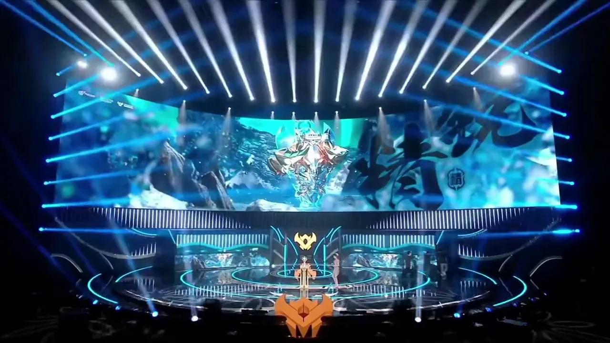
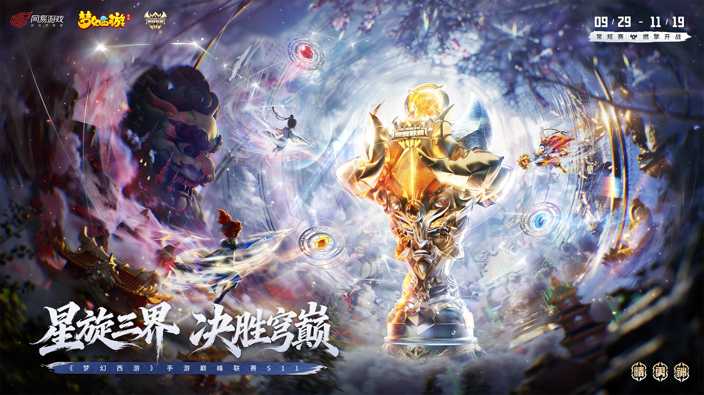
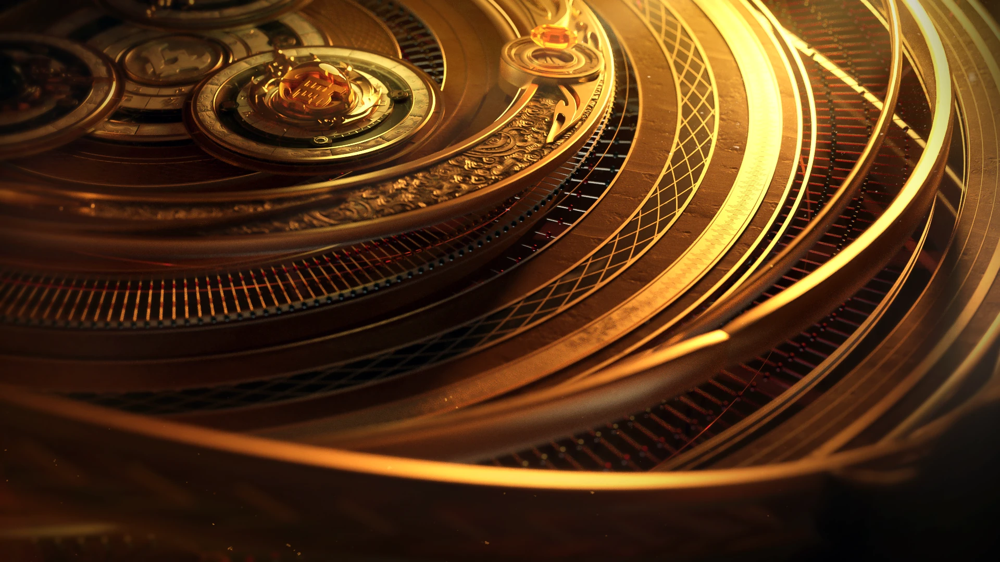
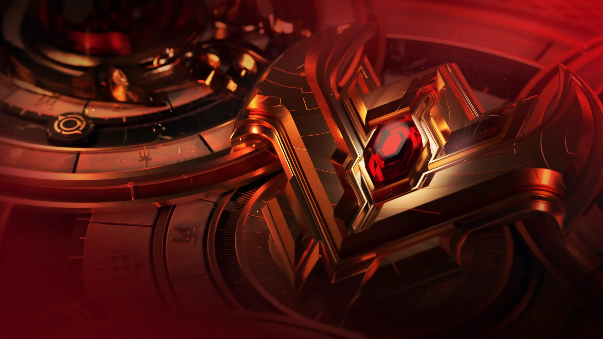

关于
我们为这项游戏内最高规格的职业化电竞赛事打造了一套视觉系统，希望把赛事的量级与声望，在观众第一眼看到时就传达出去。
从《梦幻西游》的国风美学与经典场景中汲取灵感，我们让赛场延续玩家熟悉的东方幻想气质，同时跳出传统电竞赛事的视觉套路，用山水、门派与奖杯搭起一个视觉冲击力极强的竞技舞台。
赛事期间的千万级别持续曝光与媒体互动，放大明星指挥与俱乐部战队的影响力，也让粉丝与潜在用户和赛事建立更深的情感联结，为《梦幻西游》手游带来持续的用户增长与市场关注。








